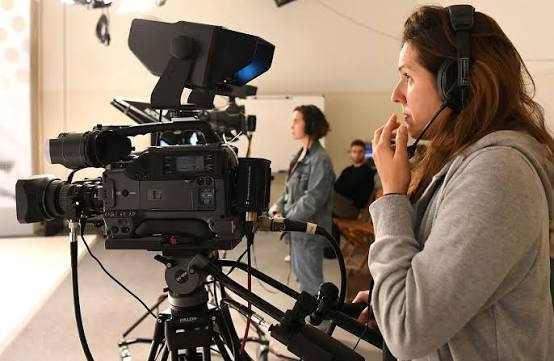

Grado en Comunicación Audiovisual
Universidad de Alcalá
2023 - 2027
Formación en producción audiovisual, realización, guion, fotografía, edición de vídeo y comunicación digital.
Estudiante de Comunicación Audiovisual
Soy estudiante de Comunicación Audiovisual con interés en la creación de contenido, la producción audiovisual y la fotografía. Me gusta desarrollar ideas creativas y convertirlas en proyectos audiovisuales que transmitan emociones y cuenten historias. A lo largo de mi formación he trabajado en diferentes proyectos relacionados con la dirección, la edición de vídeo y la creación de contenido digital.
Ver mis proyectosMi nombre es Cintia Sánchez Pérez y actualmente estudio el Grado en Comunicación Audiovisual en la Universidad de Alcalá. Me considero una persona creativa, responsable y con ganas de aprender y seguir desarrollándome dentro del sector audiovisual.
Me gusta la fotografía, el diseño gráfico y la animación.
Universidad de Alcalá
2023 - 2027
Formación en producción audiovisual, realización, guion, fotografía, edición de vídeo y comunicación digital.
Colegio Lope de Vega
2021 - 2023
Universidad de Alcalá
2024 - 2026
Participación en proyectos académicos
Freelance
2023 - 2024
Desarrollo de contenido para redes sociales y proyectos de fotografía
Consulta los proyectos en los que he trabajado a lo largo de mi carrera académica.
| Año | Proyecto | Rol | Herramientas |
|---|---|---|---|
| 2025 | Cortometraje | Dirección de Arte | Premiere Pro |
| 2025 | Proyecto fotográfico | Fotografía | Adobe Photoshop |
| 2025 | Creación de contenido digital | Producción y edición | Adobe Photoshop |

Trabajo de clase para la asignatura de Narrativa Audiovisual
Año: 2024
Ver proyectoEmail: cintia.sanchezp@edu.uah.es